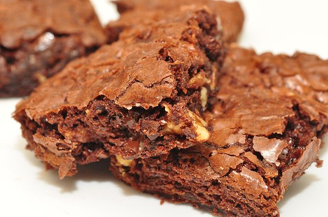

Chocolate Brownie

Description
These chocolate brownies are a sure crowd pleaser and come together with almost no effort.
The baking time given is approximate; baking for slightly less time yields a gooey brownie,
while baking for slightly longer gives a more cake-like texture.
NB. If you plan to make the brownies in advance, cakey brownies are better the next day
Beth typically uses Whittakers' Creamy Milk Chocolate for this recipe, but feel free to use your own favourite chocolate.
These are your brownies after all!
Try expirementing with dark chocolate or use white chocolate for a nice colour contrast with the brownie mix.
Ingredients
- 2/3 cup cocoa powder
- 200g softened butter
- 4 eggs
- 2 cups sugar
- 2 teaspoons vanilla essence
- 1/2 cup flour
- 1 teaspoon baking powder
- 200g good quality chocolate (break into squares or chop roughly if not using buttons or chips)
Steps
- Preheat oven to 150 Celsius
- Add softened butter and cocoa powder to a large bowl and mix well
- Add eggs, sugar, and vanilla to the bowl and mix to a smooth paste
- Sift in flour and baking powder, then add the chocolate
- Stir well to combine
- Line a 9 x 13 inch tin with baking paper and pour in the mixture
- Bake for approximately 50 minutes